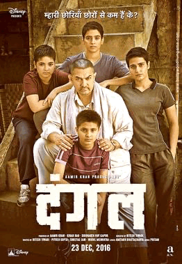
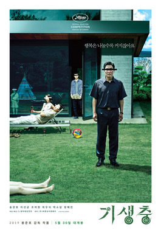
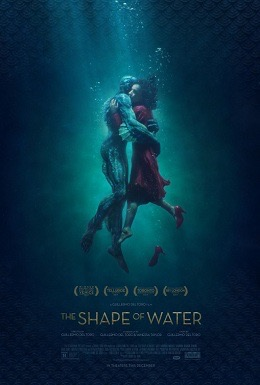

我的冠軍女兒
-
心得：裡面提到了印度許多的問題，就像是印度嚴重的男女不對等和各國皆同公家機關的腐敗，是一部精彩的角力電影，雖然其中包含對所處社會不合理的批判，但也因為拿捏得宜而被熱血的劇情與另人動容的親情給沖淡。
- 金句：獎牌不是長在樹上，並不會自己掉下來，是用愛、努力、熱情自己爭取而來的

寄生上流
- 心得：許多細節的編排別有用心，不僅呈現出韓國一些經典的文化和社會真實面貌，也把階層的人性做很深沈的描繪與刻畫，過程中運用一些黑色詼諧手法來呈現該強調的一些低階層人內心心境與反應。

一個巨星的誕生
- 心得：透過畫面的鋪陳，能夠讓歌曲在我們的腦海產生畫面的記憶，看完電影後再聽到這些歌曲會讓人感到更加的喜歡。
- 金句：一塊塊碎片拼湊而成的圓，始終還是碎片、
人不該害怕做夢，該怕的是不敢做夢
水底情深
- 心得：是美麗又殘酷的故事，是有「怪物」的故事，是「沒有聲音的公主」的故事。主要角色看起來都非常不同，但細究之會發現他們其實都是孤獨的，非常耐人尋味的一部電影。
